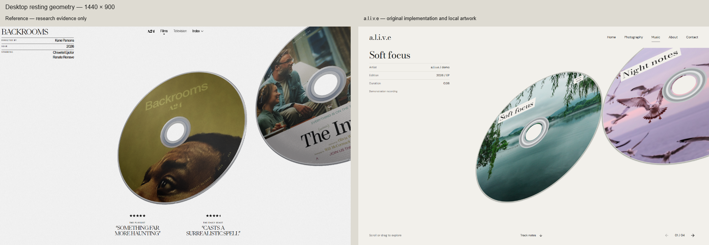
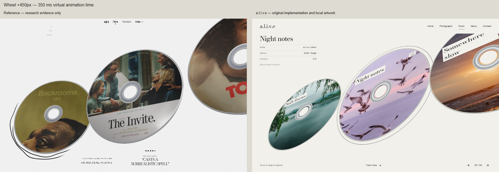
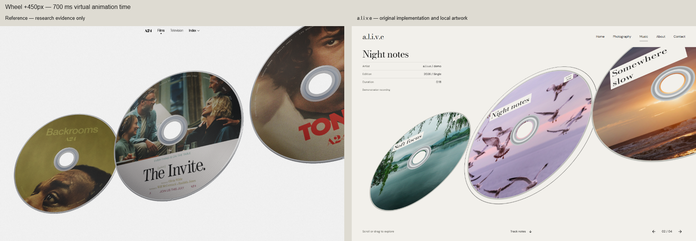
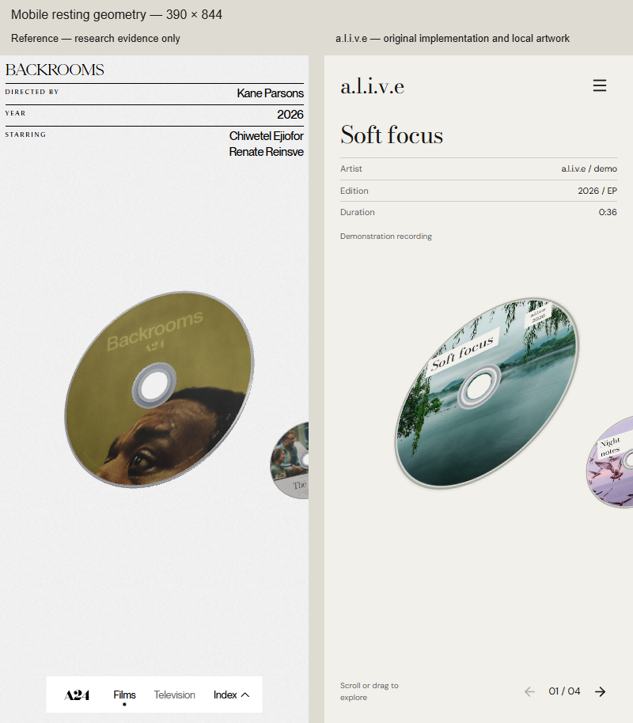
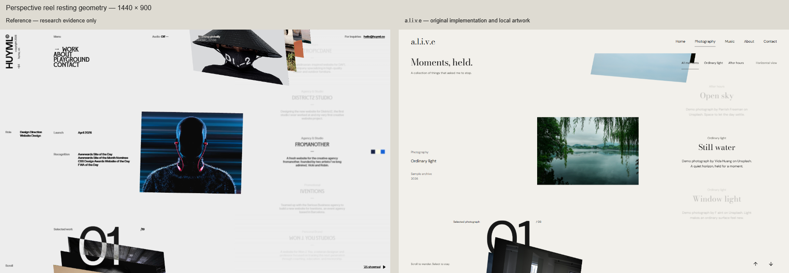
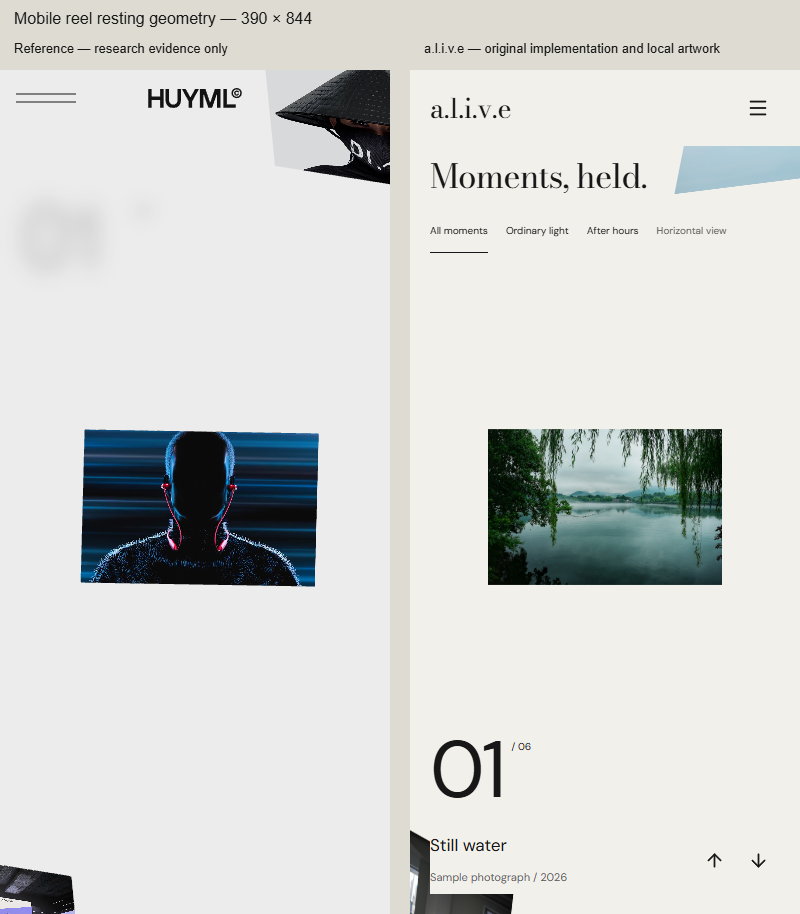
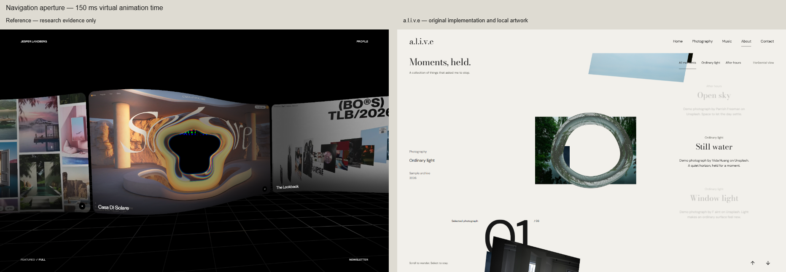
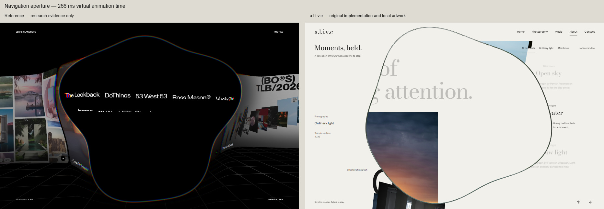
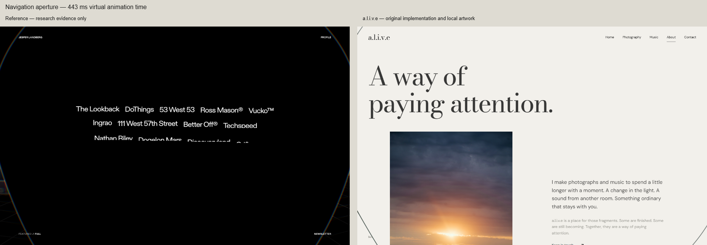
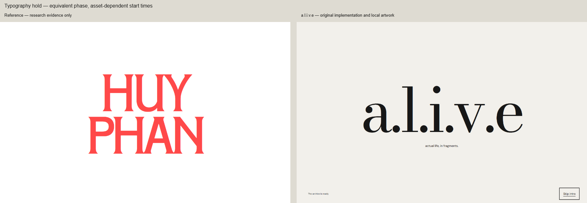

Reference interaction comparison
Same viewport dimensions; matched animation timestamps where stated. Different branding and artwork are intentional. Clock captures are quantized to approximately one animation frame (16 ms). Raw pixel differences are not used as a fidelity score because content and colors differ. See ../reference-interactions.md for geometry, timing, source limitations and verification.

Desktop resting geometry — 1440 × 900
Wheel +450px — 350 ms virtual animation time
Wheel +450px — 700 ms virtual animation time
Mobile resting geometry — 390 × 844
Perspective reel resting geometry — 1440 × 900
Mobile reel resting geometry — 390 × 844
Navigation aperture — 150 ms virtual animation time
Navigation aperture — 266 ms virtual animation time
Navigation aperture — 443 ms virtual animation time
Typography hold — equivalent phase, asset-dependent start times